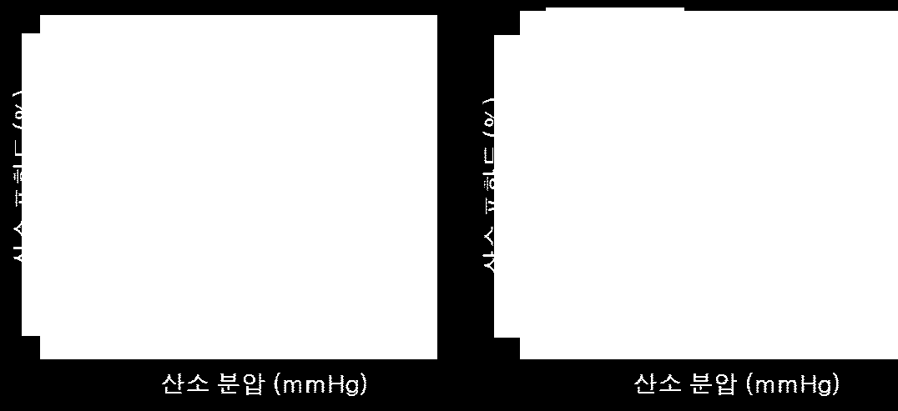

문제 1


[한국과학기술원(KAIST) 문항 정보 15]
1. 일반정보
유형
□ 논술고사 ☑ 면접 및 구술고사
전형명
일반전형
해당 대학의 계열(과목) /
문항번호
생명과학 / 문제1
모집요강에 제시한 출제
범위(과목명)
생명과학Ⅰ, 생명과학Ⅱ
출제 범위
과학과 교육과정
과목명
생명과학Ⅰ
핵심개념 및 용어
산소해리곡선, 헤모글로빈, 산소포화도
예상 소요시간
5분
2. 문항 및 제시문
문
제
오른쪽은 한 개의 글로빈 단백질로 구성된
미오글로빈과 네 개의 글로빈 단백질로 구
성된 헤모글로빈의 산소 분압에 따른 산소
포화도를 나타낸 그래프이다.
이를 바탕으로 우리 몸에서 미오글로빈 보다
헤모글로빈의 산소 전달 능력이 훨씬 효율적
인 이유를 설명하시오. 또한 헤모글로빈이
S자형 그래프를 나타내는 이유를 설명하시
오.
(3점)
3. 출제 의도
산소 전달 능력에 있어서 미오글로빈과 헤모글로빈의 차이를 주어진 산소해리곡선 및 단백
질 구조를 통해 유추할 수 있는지 평가한다.